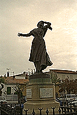
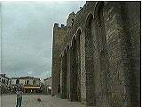
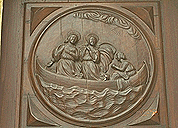
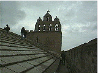
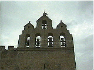
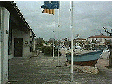
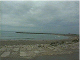
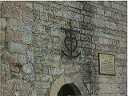
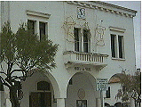

|
 ミレイユの像 | 「おお いつくしき サント・マリー |
ミストラルがプロヴァンス語で書いた美しい叙事詩「ミレイユ」。その最後の歌は、恋人ヴァンサンとの結婚を両親に反対され絶望したミレイユが瀕死の状態でサント・マリーの教会へとたどりつき、まさに息を引き取ろうとする場面から始まる。
|
 ミレイユがたどりついた教会 |
 聖女マリーたち |
「海の聖マリアたち」というこの町の名前は、紀元前40年ころのキリスト教の伝説に由来するそうだ。マリア・ヤコベ（聖母の姉妹）とマリア・サロメ（ヨハネの母）、さらにラザロやマグダラのマリアほか数人の聖人たちが小舟に乗せられ追放されたが、奇跡によってサント・マリーの浜辺にたどりつく。（このあたりの詳しい物語は、サロン・ド・プロヴァンスのグレヴァン博物館でろう人形による展示を見ることができる。）やがて聖人たちは伝道活動を行うためプロヴァンス各地に散らばるが、マリア・ヤコベとマリア・サロメはサント・マリーに残り、黒人の召使、サラに付き添われて生涯を過ごす。ちなみにこの召使サラを守護聖女としたお祭りが五月にあり、ジプシーたちの巡礼が行われるそうだ。
|
 教会の屋根の上（テラス） |
 鐘楼 |
|
 ツーリストインフォーメーション前 |
 後ろは地中海 |
|
 ガルディアン（牧童）の十字架 |
 市役所入り口にはガルディアンと アルル風の衣装の女性 |